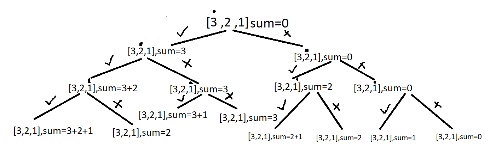
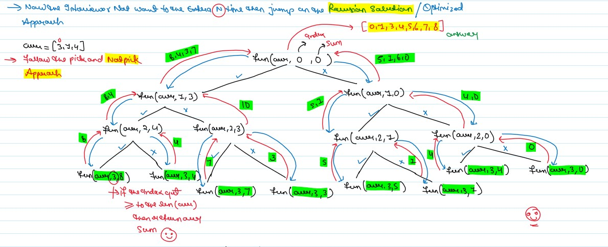

JB TAK FODEGA NHI .... TB TK CHODEGA NHI .... (MAANG)


L12 Subsets I or Subsets Sum I
Given an integer array nums of unique elements, return all possible subsets (the power set).
The solution set must not contain duplicate subsets. Return the solution in any order.
Example 1:
Input: nums = [1,2,3]
Output: [[],[1],[2],[1,2],[3],[1,3],[2,3],[1,2,3]]
Example 2:
Input: nums = [0]
Output: [[],[0]]
Constraints:
- 1 <= nums.length <= 10
- 10 <= nums[i] <= 10
- All the numbers of nums are unique.
Notes
Note: Zoom for Better Understanding
Intuition: The main idea is that on every index you have two options either to select the element to add it to your subset(pick) or not select the element at that index and move to the next index(non-pick).
Approach: Traverse through the array and for each index solve for two arrays, one where you pick the element,i.e add the element to the sum or don’t pick and move to the next element, recursively, until the base condition. Here when you reach the end of the array is the base condition.

Recursion Tree

Code Zone!
Sb Mai He Kru ...
Khud Bhi Kr le Khuch ..... Nalayk
Time Complexity:O(2^n)+O(2^n log(2^n))
Reason:ach index has two ways. You can either pick it up or not pick it. So for n index time complexity for O(2^n) and for sorting it will take (2^n log(2^n)).
Space Complexity: O(2^n) * O(N)
for storing subset sums, since 2^n subsets can be generated for an array of size n. and Recursion Stack Space.